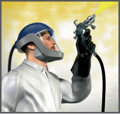
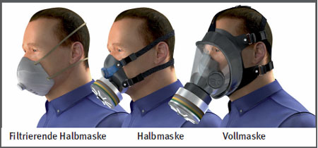
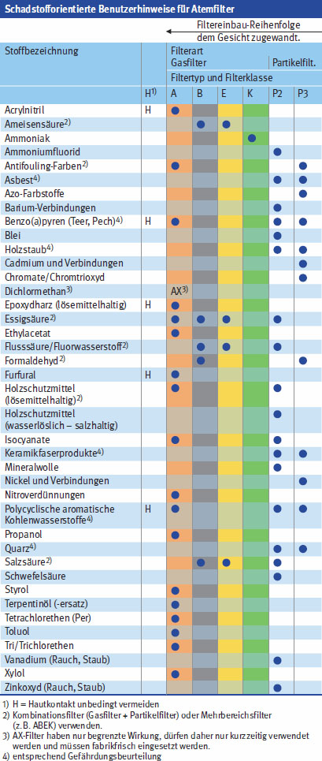

Gefährdungen
- Bei Auftreten von Gasen, Dämpfen, Nebeln oder Stäuben (Aerosolen) besteht über die Atemwege Gefährdung der Gesundheit.
Auswahl/Benutzung
- Sind Ersatzstoffe nicht einsetzbar und lässt sich durch bauliche, technische oder organisatorische Schutzmaßnahmen das Auftreten von gesundheitsgefährlichen Gasen, Dämpfen, Nebeln oder Stäuben (Aerosolen) nicht vermeiden, sind vom Unternehmer Atemschutzgeräte zur Verfügung zu stellen und von den Beschäftigten zu benutzen.
- Filtergeräte werden unterteilt in Geräte mit Gasfiltern, Partikelfiltern und Kombinationsfiltern. Voraussetzung für den Einsatz von Filtergeräten ist, dass die Umgebungsatmosphäre mindestens 17 Vol.-% Sauerstoff enthält, für spezielle Tätigkeiten, z. B. bei Arbeiten in Bereichen unter der Erdgleiche, mindestens 19 Vol.-%.
- Als Filtergeräte können filtrierende Halbmasken verwendet werden oder als Atemanschlüsse für Filtergeräte Vollmasken oder Halbmasken. In Verbindung mit einer Gebläseunterstützung können auch Hauben oder Helme als Atemanschluss benutzt werden. Masken sind im Gegensatz zu Gebläsefiltergeräten mit Haube oder Helm nicht für Bartträger geeignet.
- Gebrauchsanleitung des Herstellers beachten.
- Auswahl der Filter nach Art und Höhe der Schadstoffkonzentration vornehmen.
- Verwendungsbeschränkungen beachten.

Bauarten/Materialien
Vollmasken
- Sie umschließen das ganze Gesicht und schützen damit gleichzeitig die Augen. Für Brillenträger gibt es spezielle Maskenbrillen.
Halbmasken/filtrierende Halbmasken
- Sie umschließen nur Mund und Nase und können ungeeignet gegen sehr giftige Gase und Aerosole sowie augenreizende Schadstoffe sein, wenn nicht eine geeignete Gasschutzbrille getragen wird.
Atemschutzhauben
- Sie umschließen mindestens das Gesicht, häufig den gesamten Kopf und enthalten entweder eingearbeitete Filter oder werden ausreichend mit Luft (Gebläse mit Filter oder Umgebungsluftunabhängig) versorgt und sind ab Geräteklasse TH2P unter Berücksichtigung der zulässigen Schadstoffkonzentrationen geeignet gegen alle gesundheitsgefährlichen Schadstoffe.
Anforderungen beim Tragen von Atemschutz
- Für den Geräteträger sind eine theoretische und praktische Ausbildung sowie eine regelmäßige Unterweisung erforderlich.
- Atemschutzgeräte nur für kurze Zeit einsetzen. Die Einsatzdauer und Erholungszeit (Gebrauchsdauerbegrenzung, früher Tragezeitbegrenzung genannt) ist abhängig
- vom Maskentyp,
- vom Umgebungsklima,
- von der Wärmestrahlung,
- von den Bekleidungseigenschaften.

Kennzeichnung
- Einsatz von Partikelfiltern bei festen und flüssigen Aerosolen, z.B. Stäube, Rauche oder Nebel, wenn sie keine leicht flüchtigen Stoffe enthalten. Es gibt drei Partikelfilterklassen (P1, P2, P3). Zusätzlich sind die Partikelfilter mit "NR" oder "R" gekennzeichnet. "NR" bedeutet: Mehrfachgebrauch auf max. 1 Schicht begrenzt. "R" bedeutet: Mehrfachgebrauch über 1 Schicht hinaus möglich.
- Gasfilter bei Gasen oder Dämpfen ohne Partikel. Die Kennfarbe ist je nach Schadstoff unterschiedlich. Es gibt drei Klassen (1, 2 und 3) mit kleinem, mittlerem und großem Aufnahmevermögen.
- Kombinationsfilter bei gleichzeitigem Vorhandensein von Gasen, Dämpfen, Nebeln und Partikeln (Aerosolen).
- Kennzeichnung des Arbeitsbereiches
Prüfungen
- Haltbarkeitsdatum bei Gasfiltern beachten. Geöffnete Filter sind unter Berücksichtigung der Dokumentation und der Herstellerangaben bedingt lagerfähig.
- Wartungsfristen, Sicht-, Dicht- und Funktionsprüfungen der Atemanschlüssen nach Herstellerangaben und der DGUV Regel 112-190 beachten und ggf. durchführen.
Arbeitsmedizinische Vorsorge
- Arbeitsmedizinische Vorsorge nach Ergebnis der Gefährdungsbeurteilung veranlassen (Pflichtvorsorge) oder anbieten (Angebotsvorsorge). Hierzu Beratung durch den Betriebsarzt.
- Die Benutzung von Atemschutzgeräten bedeutet eine zusätzliche Belastung für den Träger.
- Gebläsefiltergeräte mit Helm oder Haube haben keine Gebrauchsdauerbegrenzung (früher: Tragezeitbegrenzung).
07/2021